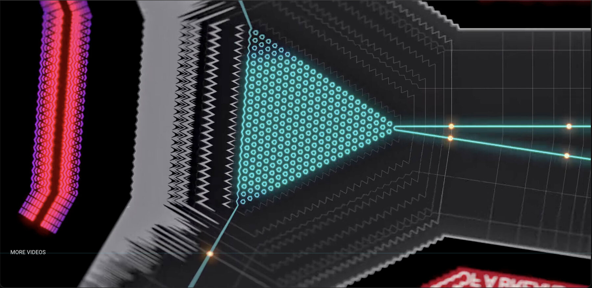
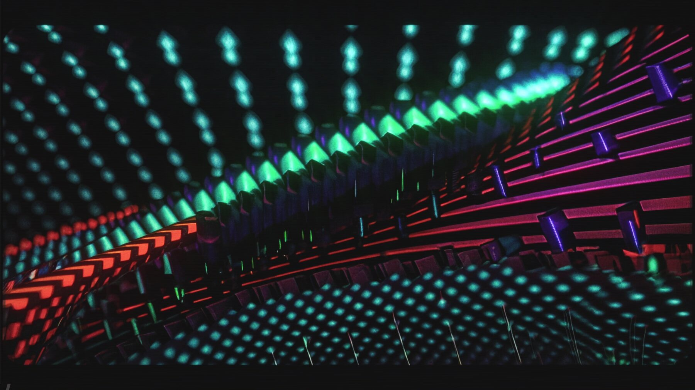
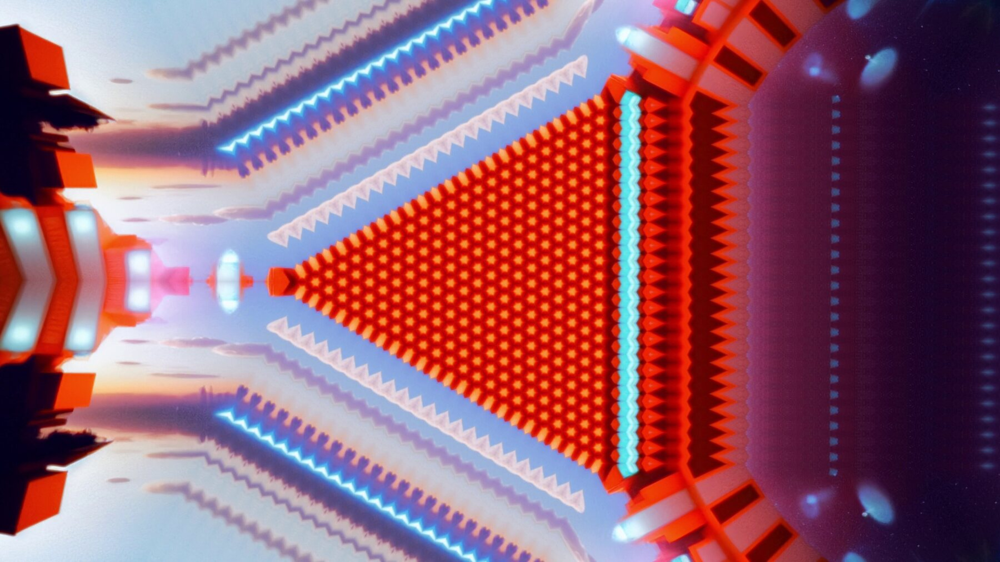
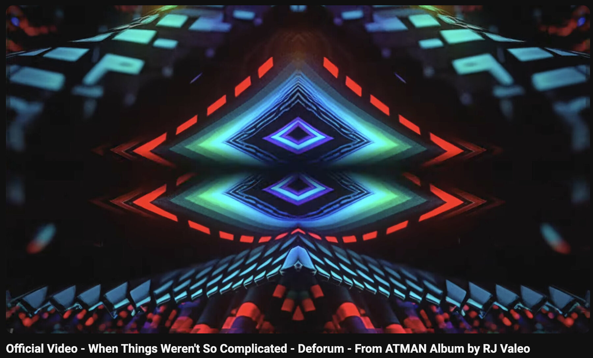

Music visualizers
4K visualizer films for my own music, built on a video pipeline I designed.
Creative productionAudio
4Kfinished video
1pipeline, end to end
The problem
- My releases needed video.
What I did
- Built the video-production pipeline for 4K visualizer content.
- Handled motion graphics, titles, animation and thumbnails.
- Released the work as Isomer Transition.
What changed
- A body of finished films, released as Isomer Transition and RJ Valeo on my YouTube channel, Transelectronic Labs.
Watch



